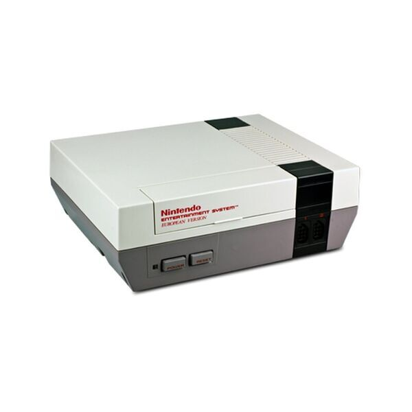
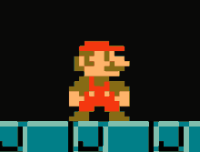
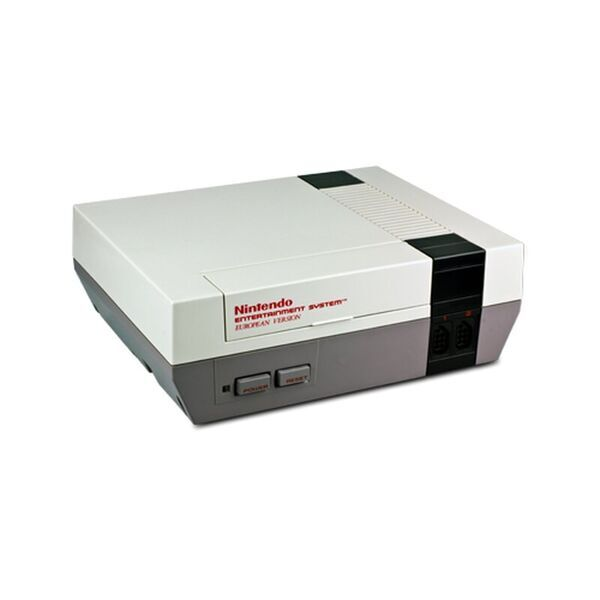
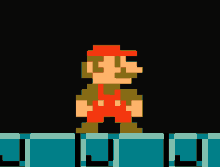
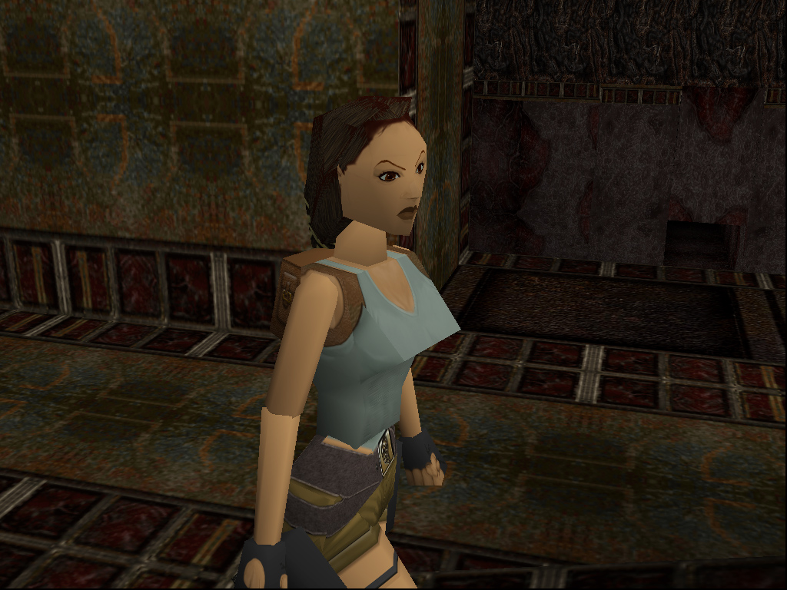

STORIA
La storia dei videogiochi è un viaggio lungo oltre mezzo secolo, ricco di innovazioni, successi e momenti iconici che hanno segnato generazioni di giocatori.
origini (anni '50 - '60)
- Nel 1972 nasce il primo videogioco commerciale, Pong, distribuito da Atari: un semplice gioco di ping pong virtuale che conquistò i bar e le sale giochi di tutto il mondo.
- I primi esperimenti risalgono agli anni '50, con progetti universitari e militari come Tennis for Two (1958) e Spacewar! (1962).


sale giochi (anni '80)
- Gli anni '80 segnarono l'esplosione del fenomeno: titoli come Pac-Man, Donkey Kong e Space Invaders divennero simboli culturali.
- Le prime console domestiche, come l'Atari 2600 e il Nintendo Entertainment System (NES), portarono il divertimento nelle case, dando vita a personaggi leggendari come Mario e Zelda.
 



rivoluzione 3D (anni '90)
- Con l'arrivo della grafica tridimensionale, i videogiochi divennero sempre più realistici. Console come PlayStation, Nintendo 64 e Sega Saturn cambiarono completamente l'esperienza visiva e sonora.
- In questi anni nacquero saghe immortali come Final Fantasy VII, Tomb Raider e Metal Gear Solid.


L'era moderna (anni 2000 - oggi)
- Il nuovo millennio portò internet nel mondo del gaming, aprendo le porte al multiplayer online e agli esport.
- Oggi i videogiochi sono diventati opere complesse, con storie cinematografiche, grafica realistica e mondi virtuali sconfinati.
- L'industria del gaming è ora più grande di quella del cinema e della musica messe insieme. Dai pixel alle realtà virtuali, i videogiochi raccontano la storia dell'evoluzione tecnologica e creativa dell'uomo.